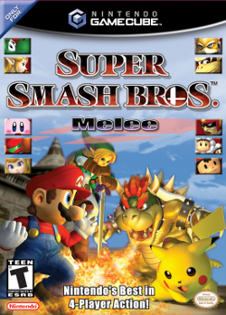

Timeline
Super Smash Bros (1999)
Super Smash Bros. Melee (2001)

"The Best Super Smah Bros Game Ever"
Super Smash Bros. Brawl (2008)
"Slightly better graphics, but melee is better"
Super Smash Bros. for Nintendo 3DS and Wii U (2014)
"Who plays this game?" I do (Bayonetta Player)